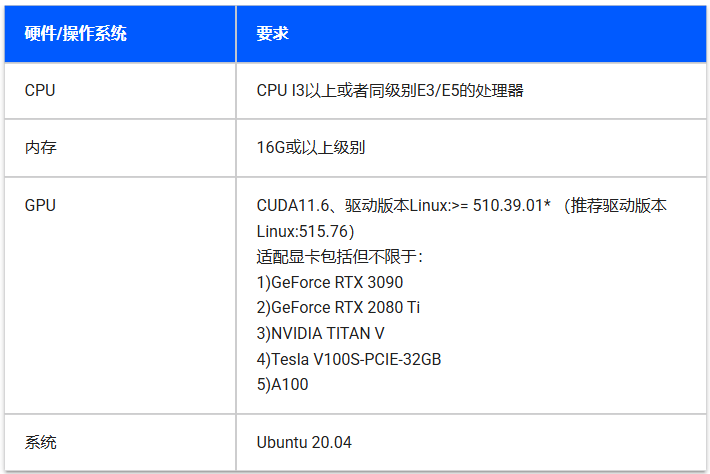
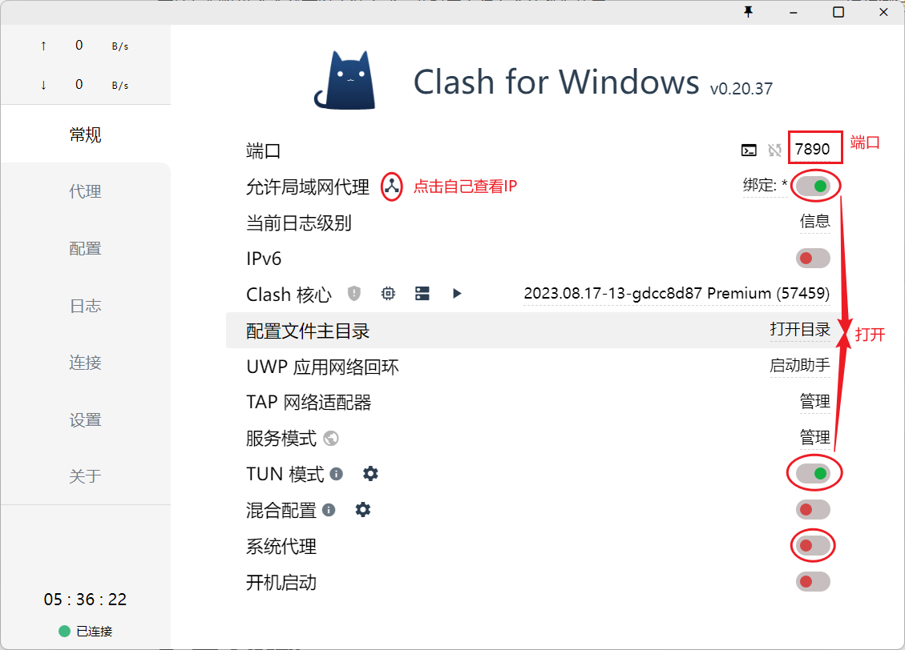
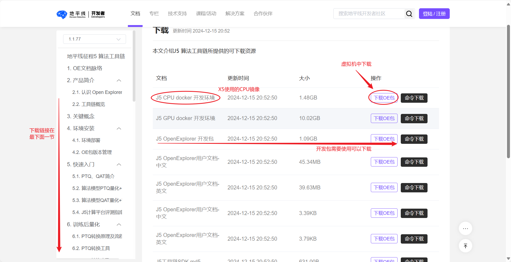
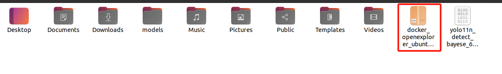
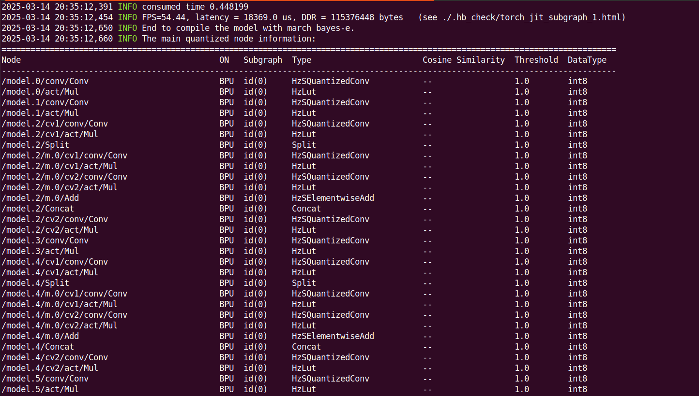

BPU模型量化(RDK X5)
1. 配置工具链Docker环境¶
1.1 虚拟机环境¶
官方对于天工开物开发机的要求：

使用Ubuntu20.04虚拟机即可，由于虚拟机不像物理机一样轻松调用GPU加速，所以后面均采用CPU方式。
参考：虚拟机安装资料
1.2 虚拟机安装Docker¶
- 更新系统包索引
- 安装必要依赖
- 添加Docker官方GPG密钥
curl -fsSL https://download.docker.com/linux/ubuntu/gpg | sudo gpg --dearmor -o /usr/share/keyrings/docker-archive-keyring.gpg
- 配置Docker APT仓库
echo "deb [arch=$(dpkg --print-architecture) signed-by=/usr/share/keyrings/docker-archive-keyring.gpg] https://download.docker.com/linux/ubuntu $(lsb_release -cs) stable" | sudo tee /etc/apt/sources.list.d/docker.list > /dev/null
- 安装Docker引擎
sudo apt update
sudo apt install -y docker-ce docker-ce-cli containerd.io docker-buildx-plugin docker-compose-plugin
- 启动并验证服务
- 配置非Root用户权限
sudo usermod -aG docker $USER
newgrp docker # 立即生效或重新登录
sudo groupadd docker
sudo gpasswd -a ${USER} docker
sudo service docker restart
直接复制粘贴命令就可以安装完成，此时网上很多会让我们使用sudo docker run hello-world运行测试容器，然后就会发现网络错误，很多解决方法都是不对的。
1.3 解决Docker网络问题¶
创建文件夹
添加文件
打开文件
添加下面内容：
[Service]
Environment="HTTP_PROXY=http://proxy.example.com:8080/"
Environment="HTTPS_PROXY=http://proxy.example.com:8080/"
Environment="NO_PROXY=localhost,127.0.0.1"
其中http://proxy.example.com需要替换为自己的IP，8080端口也需要替换为7890。

这样以后Docker拉去就不会出现网络问题了。
2. 配置Docker镜像¶
2.1 下载与加载镜像¶
镜像下载地址：https://developer.horizon.auto/docs/J5/toolchain/1.1.77/download
建议离线下载，会快一些。

开发包可以选下，我个人不会使用，我只是进行模型转化暂时也用不到。

将镜像移动到根目录，加载镜像(虚拟机内存多一些，不然加载会出现内存不足)：
2.2 使用镜像¶
本部分是自己摸索的使用步骤，并不专业，但应该够用。
新建一个文件夹models用于单独存放模型转换文件
运行docker并挂载该目录
docker run -it --rm \
-v /home/lzh/models/:/open_explorer \
-v $(pwd):/openexplorer \
openexplorer/ai_toolchain_ubuntu_20_j5_cpu:v1.1.77-py38 \
/bin/bash
2.3 配置模型转化环境¶
跟着这个地平线官方博客走就行：YOLOv11，地瓜RDK X5开发板，TROS端到端140FPS！-CSDN博客
一直到PTQ方案量化转化这一节检查模型完成，部分输出结果如下：

关于校准数据准备博客并未提及，而是在后来的另一篇博客提到：
YOLO12在RDK X5上的部署，体验纯视觉Transformer的YOLO目标检测！_yolov12 transformer-CSDN博客
个人认为对于我这种小白提一句还需要琢磨很久，所以把这部分大致列一下，其实有官方脚本还算容易，美中不足的就是官方的资料对小白并不友好。
2.4 准备校准数据¶
① 找照片数据
如果是自己训练的模型，最好在自己的数据集里面找照片。
下面是官方提供的地址，不够又是在另一个文档托管网站了，就不再列举了。其中我在COCO随意下载了一个数据集，然后从中选了一百张单独一个文件夹放models目录。
② 下载官方脚本
下载地址：
该文件同样放models目录。
③ 整理目录
在配置模型转化环境章节，我们得到一个yolo11n.onnx，加上照片数据文件夹命名为origin_coco_imgs_200，新建空文件夹calibration_data。
然后新建yolo11文件将以上文件/文件夹都放进此目录，包括generate_calibration_data.py脚本。
此时的docker目录应该为：
默认刚进入docker是在
/open_explorer#目录，docker中不显示models目录。(可能原理不太对，应为对docker不熟，但目录是这样以后模型转换就没有问题)
├── ultralytics
└── yolo11
├── calibration_data
├── generate_calibration_data.py
├── origin_coco_imgs_200
└── yolo11n.onnx
④ 运行python脚本
目录正确后，就运行python脚本
--src参数是原图片目录，--dist是输出目录。
2.5 量化转化¶
继续跟着模型检测后的步骤就行了，记得改一个参数。
根据模型检查结果，找到手动量化算子Softmax, 应有这样的内容, Softmax算子将模型拆为了两个BPU子图。这里的Softmax算子名称为"/model.10/m/m.0/attn/Softmax"。
新建并打开yolo11_config.yaml
添加如下内容，其中官方博客为calibration_data_rgb_f32_640，我们改成自己的calibration_data。
model_parameters:
onnx_model: './yolo11n.onnx'
march: "bayes-e"
layer_out_dump: False
working_dir: 'bin_dir/yolo11n_detect_bayese_640x640_nv12'
output_model_file_prefix: 'yolo11n_detect_bayese_640x640_nv12'
# YOLO11 n, s, m
node_info: {"/model.10/m/m.0/attn/Softmax": {'ON': 'BPU','InputType': 'int16','OutputType': 'int16'}}
# YOLO11 l, x
# node_info: {"/model.10/m/m.0/attn/Softmax": {'ON': 'BPU','InputType': 'int16','OutputType': 'int16'},
# "/model.10/m/m.1/attn/Softmax": {'ON': 'BPU','InputType': 'int16','OutputType': 'int16'}}
input_parameters:
input_name: ""
input_type_rt: 'nv12'
input_type_train: 'rgb'
input_layout_train: 'NCHW'
norm_type: 'data_scale'
scale_value: 0.003921568627451
calibration_parameters:
cal_data_dir: './calibration_data'
cal_data_type: 'float32'
compiler_parameters:
compile_mode: 'latency'
debug: False
optimize_level: 'O3'
量化转化
.bin文件生成在bin_dir目录，然后使用地平线的API就可以差不多得到BPU的10TOPS算力了。
n. 参考资料¶
4.1. 环境部署 — Horizon Open Explorer
彻底解决docker：docker: Get https://registry-1.docker.io/v2/: net/http: request canceled 报错-CSDN博客
YOLOv11，地瓜RDK X5开发板，TROS端到端140FPS！-CSDN博客
YOLO12在RDK X5上的部署，体验纯视觉Transformer的YOLO目标检测！_yolov12 transformer-CSDN博客